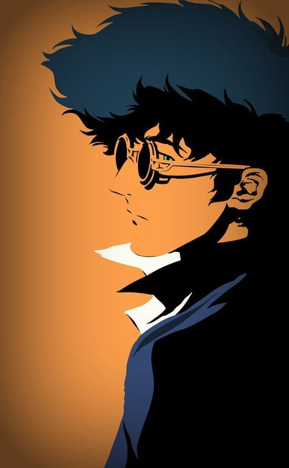

|  | BIOGRAFIA |
|---|---|
|
Spike Spiegel é um ex-membro do sindicato criminoso Red Dragon,
conhecido por seu estilo relaxado e aparência desleixada, mas extremamente mortal quando necessário.
Após romper com o sindicato por causa de um romance proibido e uma traição interna, ele passa a viver
como um caçador de recompensas ao lado de Jet Black na nave Bebop. Apesar de agir como alguém que
não liga para nada, Spike carrega um passado doloroso e vive como se já estivesse morto,
buscando apenas seguir em frente até finalmente encarar seu destino. | |
| ARMAS | |
|
Jericho 941: Arma de mão confiável e rápida. É o que Spike usa quase sempre — símbolo de precisão, calma e letalidade. Nunchaku: Arma simples usada quando quer lutar com estilo. Representa sua fluidez e técnica marcial. | |
| Habilidades | |
|
Mestre em Jeet Kune Do: Estilo de luta fluido e imprevisível, baseado em movimentos naturais e eficientes. Reflexos sobre-humanos: Spike reage antes mesmo de pensar, desviando de tiros e golpes com facilidade. Habilidade suprema com armas de fogo: Preciso, rápido e frio; atira com tranquilidade mesmo em situações extremas. |